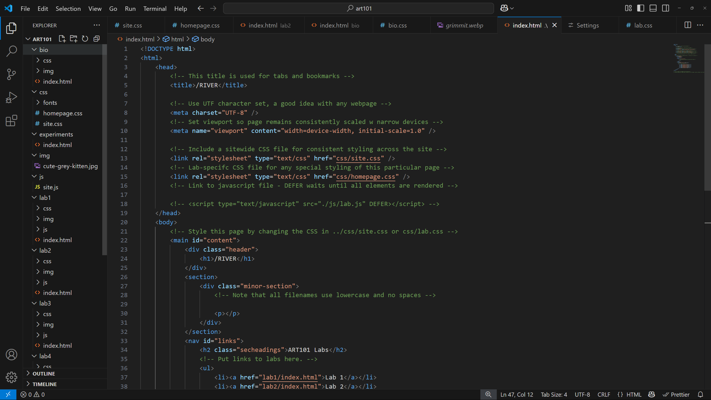
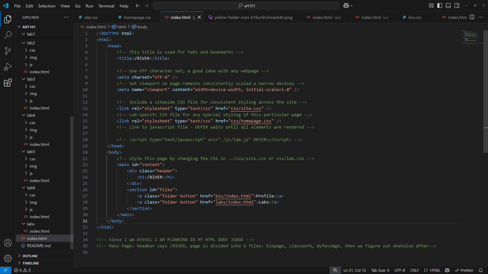
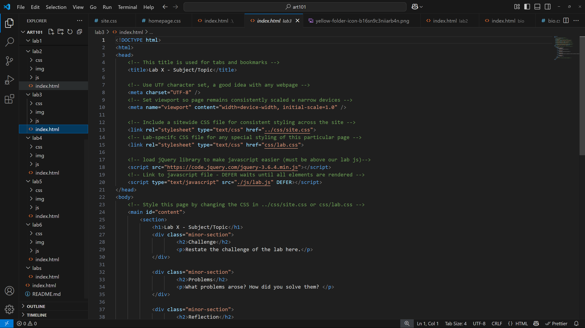
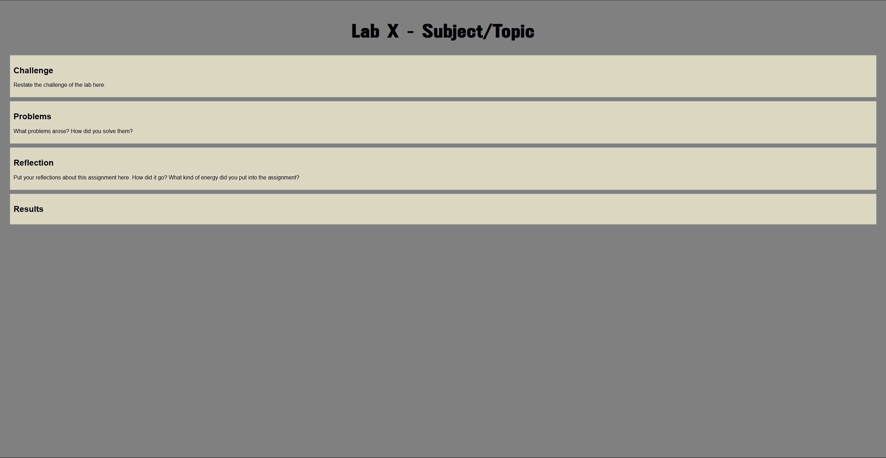

Lab 3 - Subject/Topic
Challenge
Restate the challenge of the lab here.
We gotta put some images in here :D
Part 1 - Screenshot of File Structure
Part 2 - Screenshot of art101/index.html
Part 3 - Screenshot of lab3/index.html in editor
Part 4 - Screenshot of lab3/index.html in browser
Problems
What problems arose? How did you solve them?
Reflection
Put your reflections about this assignment here. How did it go? What kind of energy did you put into the assignment?